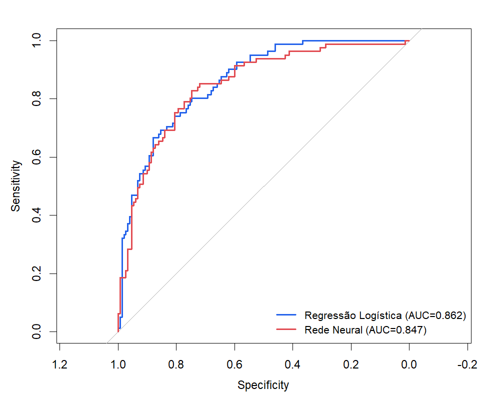
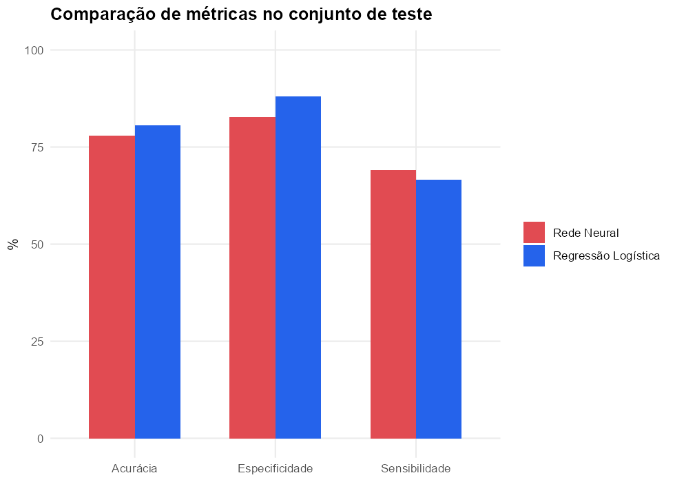
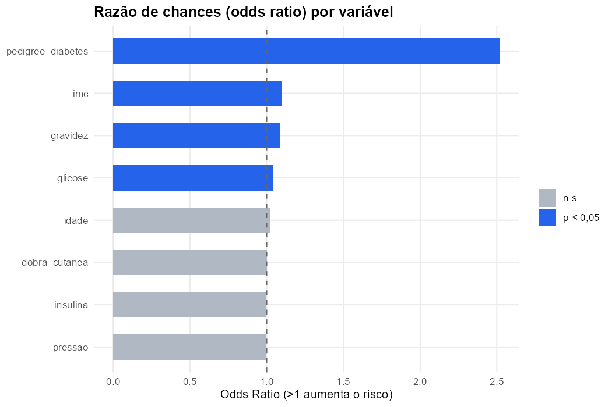
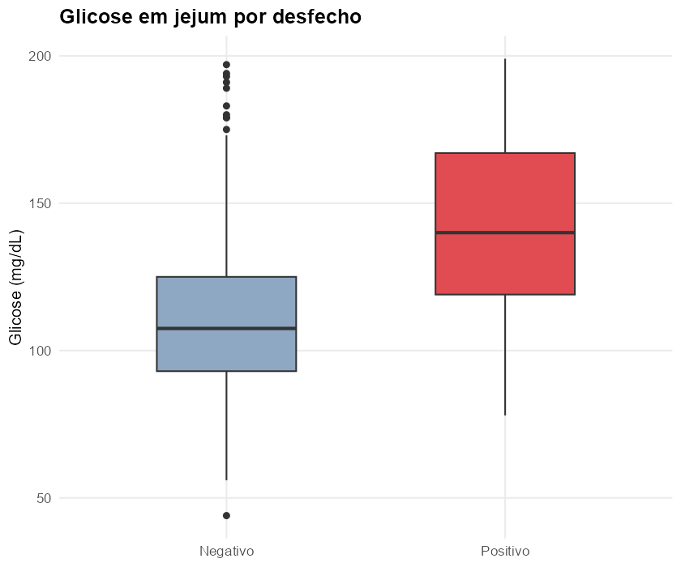

Predição de diabetes: comparação real entre um modelo estatístico clássico e uma rede neural, com teste formal de diferença entre as curvas ROC — não apenas "qual número é maior".
"Rede neural é sempre melhor que estatística clássica?" é a pergunta errada. A certa é: nesse problema, com esses dados, a diferença é estatisticamente real — ou é ruído? Para responder isso de verdade não basta comparar duas acurácias: precisa de um teste formal comparando as curvas ROC (DeLong).
Dataset público do National Institute of Diabetes and Digestive and Kidney Diseases — 768 pacientes do sexo feminino, com 8 variáveis clínicas (glicose, pressão arterial, IMC, idade, número de gestações, entre outras) e o desfecho diabetes (positivo/negativo). Valores fisiologicamente impossíveis (ex: pressão = 0) foram tratados como faltantes e imputados pela mediana.
Divisão treino/teste 70/30 estratificada pelo desfecho. Dois modelos:


p = 0,39 — a diferença entre os modelos não é estatisticamente
significativa. Neste problema, com esse volume de dados, a rede neural não
supera a regressão logística. E a logística ainda entrega o que a rede neural não
entrega de graça: coeficientes interpretáveis.
Como a regressão logística tem coeficientes interpretáveis, dá pra responder "o que pesa mais no risco?" — não só "qual é o risco".


Estatisticamente significativos (p < 0,05): glicose (p < 0,001), IMC (p < 0,001), histórico familiar/pedigree de diabetes (p = 0,007) e número de gestações (p = 0,025). Pressão arterial, espessura da dobra cutânea e insulina não mostraram efeito independente significativo neste modelo — o que não significa que sejam irrelevantes clinicamente, só que, ajustado pelas demais variáveis, não sobra sinal estatístico próprio.
| Item | Detalhe |
|---|---|
| Fonte dos dados | National Institute of Diabetes and Digestive and Kidney Diseases (via UCI) |
| N | 768 (537 treino / 231 teste) |
| Prevalência de diabetes | 34,9% |
| Teste de comparação | DeLong (curvas ROC correlacionadas) |
| Software | R — glm, nnet, pROC, ggplot2 |